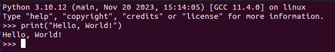
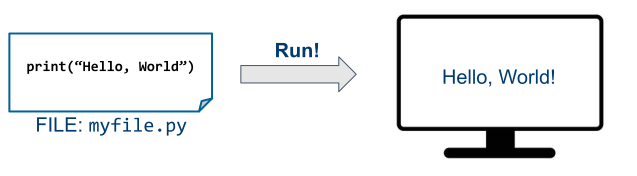
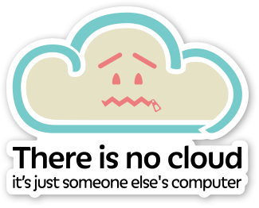
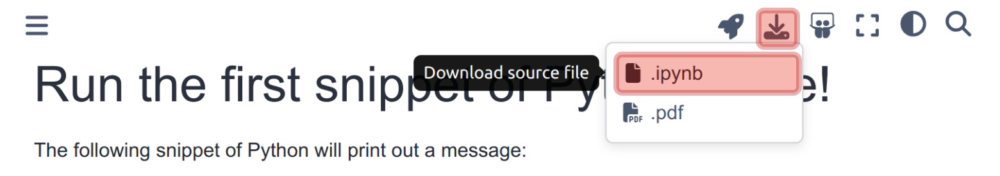
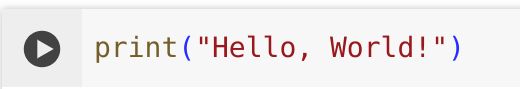
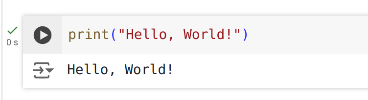
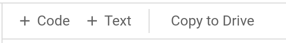

Introduction#
Python and R for Data Science
Data Science and Management

Who we are#
Teacher: Emilio Coppa
Position: Assistant Professor @ LUISS
Research topics: software testing, vulnerability detection
Extra: Team Manager of TeamItaly, the italian cybersecurity team
Other info: https://ecoppa.github.io
Contanct: ecoppa@luiss.it
Teaching Assistant for Python: Lorenzo Ariemma
PhD in Computer Science and Automation
Why do we care about Data Science?#
We can understant a lot of our everyday life by analyzing the existing data from our world. Such approach is called Data Science:
An interdisciplinary field that uses:
statistics and processes
scientific computing and methods
scientific visualization
algorithms and systems
to extract or extrapolate knowledge and insights from potentially noisy, structured, or unstructured data.
But, more concretely?#
We need to learn a bit of:
computer programming
data science frameworks for:
data processing
data visualization
data learning
Why computer programming?#
Most everyday tasks require to perform:
repetitive…
long sequences of…
simple steps
This scenario is exactly where a computer excels!
Computers are incredibly fast, accurate, and stupid. Human beings are incredibly slow, inaccurate, and brilliant. Together they are powerful beyond imagination.
– Albert Einstein
Why do you need to learn computer programming?#
It give us the means to automatically analyze the data and extract knowledge from it.
Solving a task => Algorithm => Recipe followed by a computer#
An algorithm features:
a sequence of simple steps
flow of control to specify when each step must be executed
a way of determining when to stop.
…just like a recipe!
However, we cannot write an algorithm in our own natural language (e.g., english). To make an algorithm interpretable by a computer, we need to learn a programming language.
Most Popular Programming Languages#
Which Computer Programming Language?#
{kind=link}
Benefits:
Easy to learn: designed to be readable, quick to learn
High-level language: abstracting away most low-level aspects of a computer
Large community and great support: several libraries allow to build complex projects with just a few lines of code
Adequate for most tasks: it shows its limits when performance is essential and low-level details play a role. You will hardly work on anything that cannot be implemented in Python
{kind=link}
How and Where#
How can we run Python code?#
Two approaches:
Interactive shell:
 workflow:
start the interactive Python shell
write one line of code in the prompt after the symbols
>>>push enter to execute it and get the results
repeat as musch as needed
not very user-friendly
appropriate only for quick tests
nothing is saved: you will lose your code when exiting the shell!
How can we run Python code? (cont’d)#
Two approaches:
Write the code into a textual file and then execute it:
 workflow:
write the code into a textual file with extension
.pyexecute the file with the Python VM
This is what you want to do!
Still iterative approach: write the code, check if it works, refine the code, …
The code can be very cryptic…
Can we add some notes around it?#
It could be hard to remember why we have written a piece of code, what are its effects and downsides.
It is often convenient to organize our code into “sections” and then add some text to describe what the code is expected to do. This is called:
Jupyter Notebook#
Using the environment JupyterLab we can create a new notebook:
Where do we run our code/notebooks?#
Local setup: your computer!
you have to install Python and all the other bits
limited by your computational power
Cloud setup:
 no need to install everything
limited by your money
Local Setup#
[Only on Windows 11]
Disable Windows Store Aliases#
From the start menu, search and then open Manage app execution aliases (Alias di esecuzione delle app)
Disables aleases for python.exe and python3.exe:
[Only on Windows 11]
Enable script cmdlet#
From the start menu, search Windows Powershell, then using the right-click select Run as administrator:
Type
Set-ExecutionPolicy unrestricted, then run it and reply y (or “s” if your Windows is in italian) :
Download Python#
Visit: https://www.python.org/
Launch the installer#
Double click on the downloaded file, e.g., on Windows:
Enable Add python.exe to PATH
Click Install now
Launch the installer (cont’d)#
Similarly on Mac OS X:
Install a (good) code editor: Visual Studio Code#
Download the latest version for your OS
Start Visual Studio Code (Windows)#
Start Visual Studio Code (Mac OS X)#
VSCode extension: Python integration#
From the side bar, open the Extension tab
Search for Python
Install the extension
VSCode extension: Python Environment Manager#
From the side bar, open the Extension tab
Search for Python Environment Manager
Install the extension
VSCode extension: Jupyter#
From the side bar, open the Extension tab
Search for Jupyter
Install the extension
Where to install Python packages from the community#
We can install Python packages from the community following two strategies:
System-wide: this may create conflicts between different projects using Python.
pros: you need to install a package only once for all projects
cons: one project may break due to a package installed/updated for another project
It is now the deprecated approach.
Project-wide: each project has its own Virtual Environment.
pros: no conflicts across packages of different projects
cons: a package must be installed again for each project
This is nowadays the suggested approach and we will follow it.
Create a new virtual environment#
Create a new folder (e.g.,
labdswithinDesktopfolder)Open the folder from VSCode:
Start the terminal: View > Terminal
Type in the terminal:
python -m venv .venv
or:
python3 -m venv .venv
Pick the default virtual environment#
From the side bar, open the Python logo
Click on the star to select the virtual environment
Close VSCode and then re-open your project folder in VSCode
Installation of Python packages in the virtual environment#
We will use some extra Python bits from the community, including:
numpy, matplotlib, seaborn, scikit-learn, and jupyterlab.
From VSCode:
Start a new terminal using the menu: Terminal > New Terminal
python -m pip install numpy matplotlib seaborn scikit-learn jupyterlab
Troubleshooting on Windows:
python is not recognized#
If, when when running python in the terminal of VSCode, you get the following error:
Then, you have to:
Troubleshooting on Windows:
python is not recognized (cont’d)#
Uninstall Python: run again the installer of Python and select Uninstall:
Troubleshooting on Windows:
python is not recognized (cont’d)#
Start the Python installer
Select Add to path at the bottom
Proceed with Install now
Cloud Setup#
Google Colab, i.e., the lazy approach#
Platform from Google
Google Account is required
Free of charge to use for the basic plan
Write code in the browser (no extra is needed)
Code executed on Google cloud servers
Low/medium performance, privacy issues
No need to install anything
From Google Drive#
Environments#
Environment: local setup with VSCode#
Use VSCode:
Quickly write and execute python files (
.py)Quick access to the local terminal
Write and execute notebooks (
.ipynb). Some advanced features of JupyterLab (that we do not need) may have limited support.Good editor with several extensions (integrations with third-party services)
Everything runs on your machine
This is the environment that we suggest you to use.
Environment: local setup with JupyerLab#
Use JupyterLab:
Start it from any terminal (e.g., from VSCode) with:
python -m jupyterlabWrite and execute notebooks (
.ipynb) with support even for advanced and weird features.Basic editor
Everything runs on your machine
We suggest to use JupterLab only when you need to run advanced Jupyter notebooks obtained from the external world
Environment: cloud setup with Colab#
Use Google Colab:
You can work from any computer. Even your tablet (although, it is a bit inconvenient!)
Write and execute on the cloud notebooks (.pynb). Some advanced features of JupyterLab (that we do not need) may have limited support.
Basic editor
Everything must be saved on Google Drive
Not adequate in future courses where you need a bit of computational power (assuming you do not want to pay Google).
We suggest to use Colab only if you issues with your local setup
Course Material#
What you need#
Each page is a Notebook#
For instance: https://ercoppa.github.io/labds/00/00-myFirstNotebook
A notebook mixes:
code: something that we can run
result of the code: we can observe the output of the code execution
text: used to describe what the code does
You can replay and extend my notebooks!#
Depending on your setup:
Local setup. Run each notebook on your machine. Download the
.ipynbis easy from the website: then open it with VSCode or JupyterLab.
Cloud setup. Run each notebook on Google Colab (i.e., Google servers). Everything within the browser. To run it on Google Colab:
When opening a notebook on VSCode#
We get the same structure as before:
However, now you can interact with the notebook in several ways.
When opening a notebook on JupyerLab#
We get the same structure as before:
However, now you can interact with the notebook in several ways.
When opening a notebook on Colab#
We get the same structure as before:
However, now you can interact with the notebook in several ways.
Replaying or updating a notebook#
Regardless of the environment (VSCode, JupyterLab, or Colab), we can perform similar interactations with the notebook.
For instance, on Google Colab, if we select a code cell, then we get a play button:

If we push it, we can run the code and (re)generate the execution output:

{kind=link}
{kind=link}
Moreover, we can modify the notebook:
double click on existing cells: change their content
add new code or text cells:

{kind=link}
Now, what?#
Now, we need to learn a bit of Python!
Check out the page/notebook Python Basics.